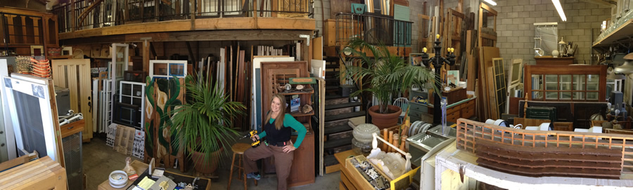

About Us

Demo 2 Design…
- Is a “green” business
- Saves homeowners money by removing waste materials from remodels
- Expedites the permitting process by complying with waste management plans
- Captures demolition materials & diverts them from landfills
- Reuses structural lumber creatively in new construction designs
- Reduces the need to extract resources from the earth
- Promotes education on efficient resource management
How it happens…
Demo 2 Design answers the question of what to do with discarded construction materials. Staff performs a site visit with contractors or homeowners before demolition to identify reusable materials that can be diverted from filling up the landfill. Contractors deconstruct and set aside materials which we transport, store and market.
History…
In 2001, Carol originated Demo 2 Design, an architectural reuse business, as an alternative to wasteful disposal of construction material entering the landfill. Her commitment to promoting environmental awareness spans 35 years ranging from public education, municipal government legislation and non-profit retail, to public-private business partnerships. Her association with Marborg Industries, Santa Barbara’s leading recycling and waste hauler, has increased the scope of service options that benefit the community.
For ten years, Carol served on the board of directors for The Sustainability Project, a non-profit organization advocating green building principles. She also collaborates with the Santa Barbara Contractors Association, the California Resource Recovery Association, and the Construction Academy of Santa Barbara City College. Her years of environmental employment with the County of San Diego, the County of Ventura, and Santa Barbara’s Art From Scrap cultivated an extensive network of professionals that continues to nurture the growth of her business.
Demo 2 Design began acquiring materials by stockpiling them in industrial metal containers. Within three years, the influx of material warranted a retail presence at “Cominichi’s,” a vintage resale cooperative. But, by 2007, the business required its own independent storefront – a 1-car garage in downtown Santa Barbara – which it quickly outgrew. In August 2008, Demo 2 Design launched a full-service materials reuse facility behind the Creekside Inn, a local favorite watering hole. There, it took root and grew beyond the bounds of its 2-car garage limits, expanding to an additional warehouse across town. The challenge of managing multiple sites spurred Carol to consolidate inventory into a prime commercial facility centrally located in the Santa Barbara area.
Future…
In addition to providing reclaimed materials, including vintage lumber and local tree slabs, Demo 2 Design offers creative custom design options incorporating these materials. Our talented, experienced team works collaboratively with clients to develop functional art and spaces like our “Custom Casitas,” permit-exempt structures built from reclaimed lumber, doors, and windows.
Demo 2 Design offers a unique, clean and well-organized collection of reclaimed and vintage materials “from the mundane to the magical.”
Call 805.886.6865 to visit our studio in the Santa Barbara area.